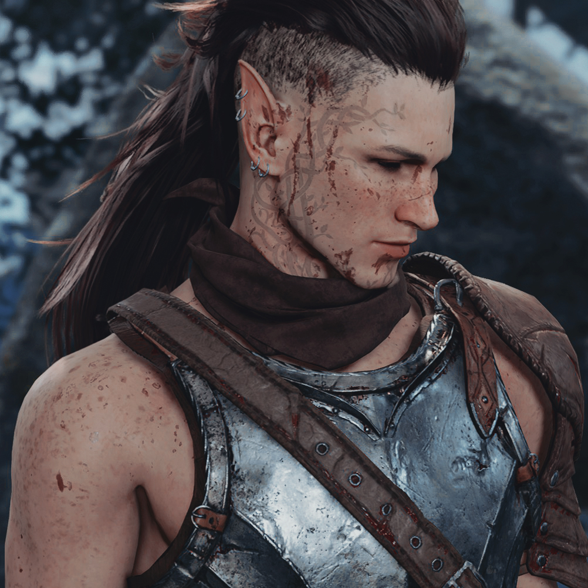

EgilEn el corazón profundo y sombrío de Eldergrove, donde los árboles antiguos susurraban secretos del pasado, vivía un druida llamado Egil. Su viaje, marcado por la lucha entre su naturaleza salvaje y su esencia humana, era un camino lleno de desafíos. Conocido por sus transformaciones favoritas, un lobo y un oso, los esfuerzos de Egil por dominar sus instintos primarios eran una lucha constante. La tragedia golpeó cuando saqueadores, envueltos en la oscuridad de la noche, arrasaron el círculo de los Druidas de la Luna Plateada. Las llamas devoraron todo: el bosque sagrado, la sabiduría antigua y las vidas queridas para Egil. En su dolor, Egil huyó hacia lo más profundo del bosque, su humanidad disminuyendo con cada paso hacia lo salvaje. A medida que los años transcurrían, historias de dos bestias imponentes comenzaron a circular entre los pueblos que bordeaban Eldergrove. Dichos ominosos hablaban de un lobo y un oso, acechando las sombras del bosque, cazando implacablemente tanto a humanos como a presas por igual. Susurros de sus aullidos escalofriantes y formas espectrales sirvieron como una advertencia, advirtiendo a todos los que se aventuraban cerca de los peligros que acechaban en el corazón del bosque. Una noche fatídica, bajo un manto de oscuridad desesperada, el destino del druida tomó otro giro lamentable. En su forma de lobo, persiguió a un ciervo, impulsado por el instinto primario. La persecución culminó cuando Egil, al acorralar al ciervo, reconoció en sus ojos temerosos a una amiga olvidada, una compañera druida de tiempos de paz, ahora gravemente herida por sus garras y colmillos. Nunca fue un ciervo. Siempre fue su querida amiga, Isolde, huyendo de él. Esta desgarradora realización despertó a Egil de su trance salvaje. Reconoció la magnitud de sus acciones, la pérdida de su querida amiga y el costo de su entrega a lo salvaje. Abrumado por el remordimiento y el dolor, Egil entendió la necesidad de reconciliarse con su pasado y controlar la bestia interior. Con este incidente como catalizador, Egil juró buscar redención. Se dio cuenta de que su camino no era simplemente un retorno a la humanidad, sino un viaje para sanar las cicatrices de su alma. La historia del Corazón Salvaje, una vez una advertencia susurrada entre los lugareños, comenzó a transformarse en una historia de... redención, quizás. El viaje de Egil, un camino desafiante para equilibrar la dualidad de su naturaleza, se convirtió en una búsqueda, un propósito para él. Sin embargo, mientras el druida deambulaba por los caminos retorcidos fuera de Eldergrove, su sombra se entrelazaba con los susurros del bosque, un recordatorio inquietante de que la línea entre el hombre y la bestia, la cordura y la locura, era tan fina como una telaraña. |
||||||||||||||||||
| Personalidad |
|---|
|

Egil es cauteloso y reservado, extremadamente selectivo a la hora de confiar en los demás. Es difícil de satisfacer, mas aunque parezca siempre tener un deje de mal humor, en él vive un anhelo por experimentar emociones perdidas en sus recuerdos, distantes a la animosidad y el deseo de venganza que se gesta en su corazón. Como druida, la sintonía con la naturaleza hace que busque protegerla, pero como cambiaformas, y a causa del pasado que arrastra con éste, suele perder la paciencia con facilidad. A veces, incluso, el control. |
| Historia |
|---|